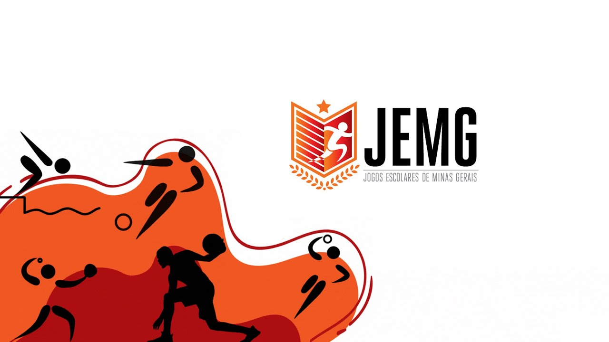
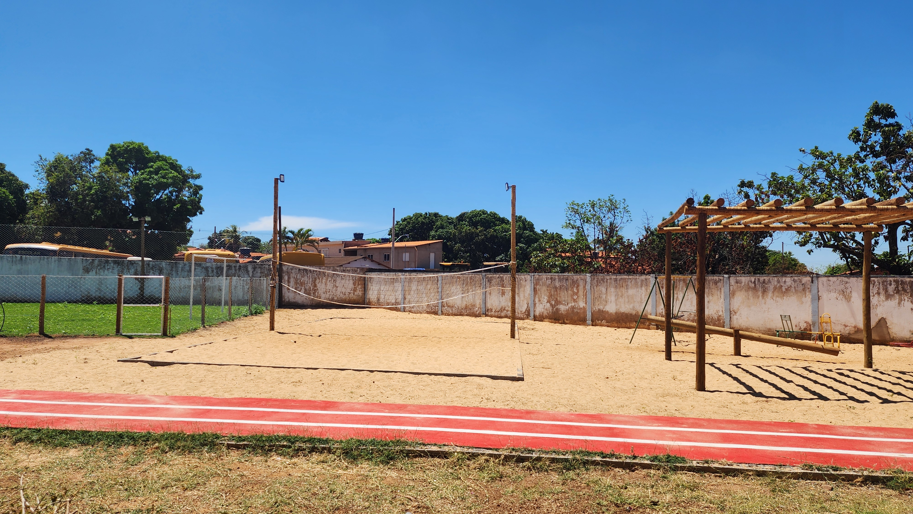
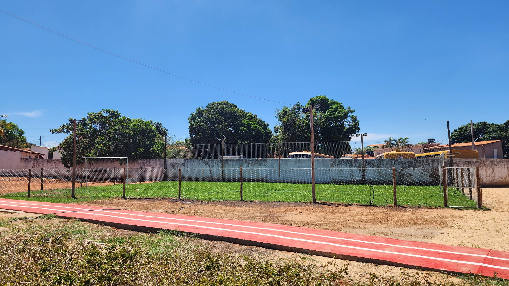
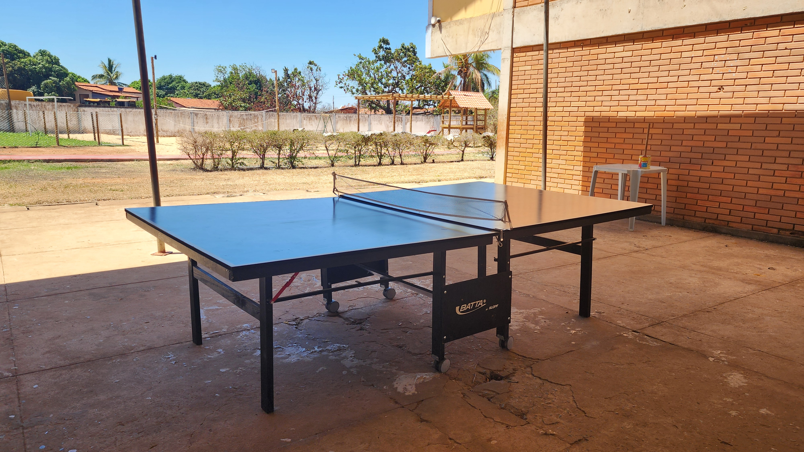
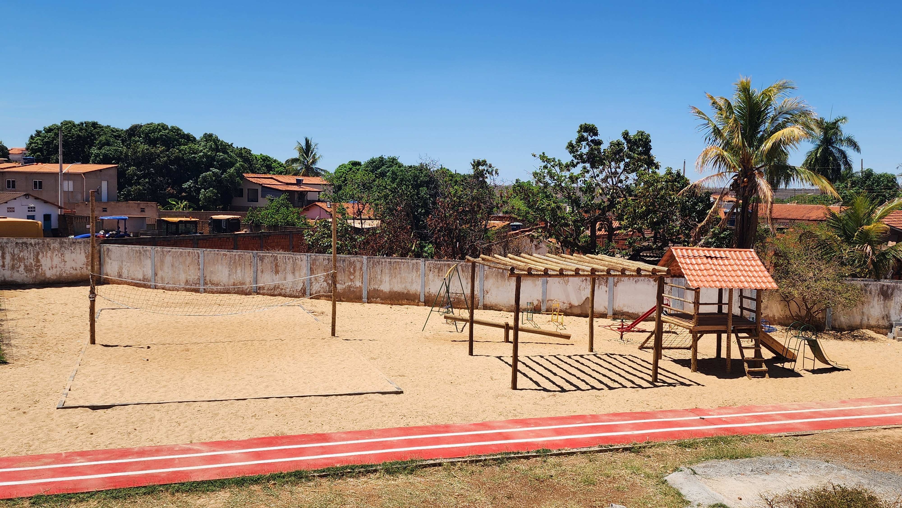
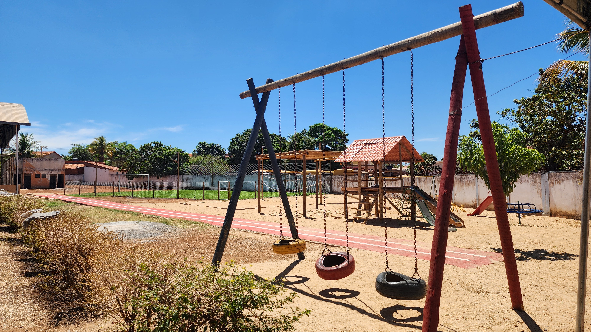

Escola Estadual Maria Barbosa Leite
Notícias EEMBL
Fique por dentro de tudo o que acontece na Escola Estadual Maria Barbosa Leite. Aqui você encontrará as principais novidades, eventos, projetos e conquistas dos nossos alunos e professores. Acompanhe as notícias e descubra um pouco mais sobre a nossa escola e o Curso Técnico em Informática.
Conheça nossas atividadesSobre Algoritmos
A Maria Barbosa Leite aparece na programação dos Jogos Escolares de Minas Gerais (JEMG) 2026, representando Ibiracatu. A equipe da escola participou da etapa realizada em Varzelândia, com partida prevista para 16 de abril de 2026, na modalidade de futebol/futsal escolar.
No xadrez.
Módulo|| FUTSAL
JEMG/2026


Entre as novidades na estrutura da escola estão novos espaços destinados ao esporte, lazer e convivência dos estudantes.

A instituição passou a contar com playground, quadra de areia e campo society.

Os novos ambientes ampliam as opções de atividades durante as aulas de Educação Física e os momentos de recreação.

A quadra de areia e o campo society possibilitam a prática de diferentes modalidades esportivas, enquanto o playground oferece mais uma opção de lazer e convivência.

Mais espaços, mais diversão e novas oportunidades para os alunos praticarem esporte, brincarem e aproveitarem a escola.